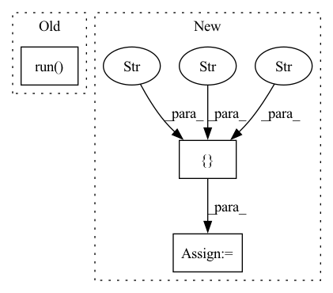

Pattern ID :23670
Before Change
op = sim.session.graph.get_operation_by_name(op_name)
is_symmetric_tensor = op.inputs[QuantizeOpIndices.use_symmetric_encoding]
op_mode_tensor = op.inputs[QuantizeOpIndices.op_mode]
self.assertEqual(sim.session.run( is_symmetric_tensor) , True)
self.assertEqual(sim.session.run(op_mode_tensor),
int(pymo.TensorQuantizerOpMode.oneShotQuantizeDequantize))
self.assertFalse(sim._param_quantizers[op_name].use_unsigned_symmetric)After Change
is_symmetric_tensor = op.inputs[QuantizeOpIndices.use_symmetric_encoding]
op_mode_tensor = op.inputs[QuantizeOpIndices.op_mode]
print(op_name, "->", sim.session.run(op_mode_tensor))
activation_quantizers_in_passthrough = ["input_1_quantized" ,
"conv2d/BiasAdd_quantized" ,
"conv2d_3/BiasAdd_quantized" ]
if op_name in activation_quantizers_in_passthrough:
assert sim.session.run(op_mode_tensor) == int(pymo.TensorQuantizerOpMode.passThrough)
else:In pattern: SUPERPATTERN
Frequency: 3
Non-data size: 3
Instances Fragment ID: 73899239
Project Name: quic/aimet
Commit Name: 9b394867c0d35e58d8dffbb0783903df6ad60f6c
Time: 2023-04-12
Author: quic_hitameht@quicinc.com
File Name: TrainingExtensions/tensorflow/test/python/non_eager/test_quantsim_config.py
M Class Name: TestQuantsimConfig
N Class Name: TestQuantsimConfig
M Method Name: test_parse_config_file_defaults_tf2(1)
N Method Name: test_parse_config_file_defaults_tf2(1)
M Parent Class:
N Parent Class: unittest.TestCase
M File Name: TrainingExtensions/tensorflow/test/python/non_eager/test_quantsim_config.py
N File Name: TrainingExtensions/tensorflow/test/python/non_eager/test_quantsim_config.py
M Start Line: 263
M End Line: 279
N Start Line: 263
N End Line: 280
Before Change
def run_mypy(file: str) -> int:
return subprocess.run( ["mypy", "--config=mypy.ini", f"{str(file)}"]) .returncode
def main() -> int:After Change
iteration = 1
while files:
print(f"Iteration {iteration}: running mypy on {len(files)}{" remaining" if iteration > 1 else ""} files")
command = ["mypy" , "--config=mypy.ini" , "--verbose" ] + files
// We pipe stdout and then print it, otherwise lines can appear in the wrong order in builds.
process = subprocess.run(command, stdout=subprocess.PIPE, stderr=subprocess.PIPE, text=True)
for line in process.stdout.split("\n"):
print(line)
// Set of files we are hoping to see mentioned in the mypy log. Fragment ID: 73899232
Project Name: microsoft/innereye-deeplearning
Commit Name: 1136e23352ac8b4e93705b96bdac9f08120f8399
Time: 2020-08-14
Author: dacart@microsoft.com
File Name: mypy_runner.py
M Class Name: AnonimousClass
N Class Name: AnonimousClass
M Method Name: run_mypy(1)
N Method Name: run_mypy(1)
M Parent Class:
N Parent Class:
M File Name: mypy_runner.py
N File Name: mypy_runner.py
M Start Line: 14
M End Line: 15
N Start Line: 11
N End Line: 45
Before Change
from os import path
currentdir = path.dirname(__file__)
updir = path.join(currentdir, "..")
nose.run( "mahotas", argv=["", "--exe", "-w", updir])
After Change
from os import path
currentdir = path.dirname(__file__)
updir = path.join(currentdir, "..")
argv = ["" , "--exe" , "-w" , updir Fragment ID: 73899215
Project Name: luispedro/mahotas
Commit Name: 2cd478e3fffe6efc9522908d8a13c05bb04e820e
Time: 2013-01-09
Author: luis@luispedro.org
File Name: mahotas/tests/__init__.py
M Class Name: AnonimousClass
N Class Name: AnonimousClass
M Method Name: run(1)
N Method Name: run(0)
M Parent Class:
N Parent Class:
M File Name: mahotas/tests/__init__.py
N File Name: mahotas/tests/__init__.py
M Start Line: 6
M End Line: 6
N Start Line: 1
N End Line: 9